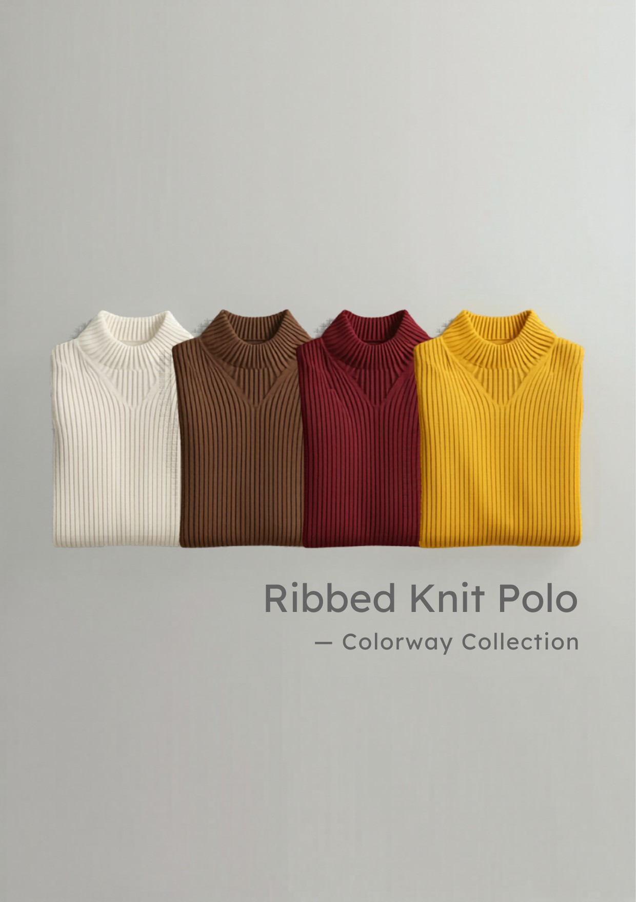
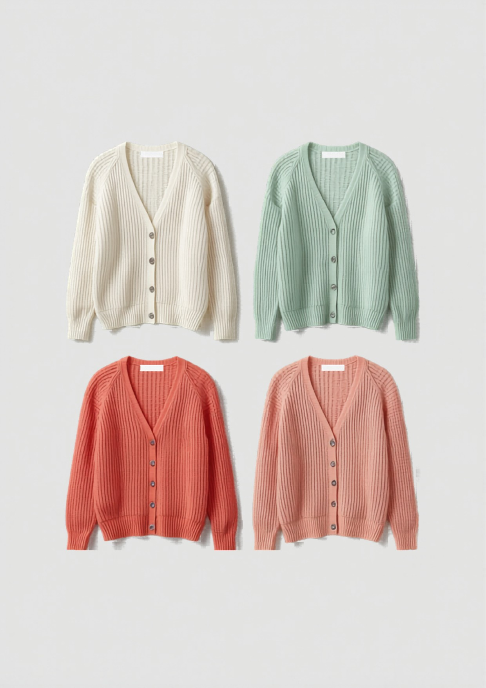
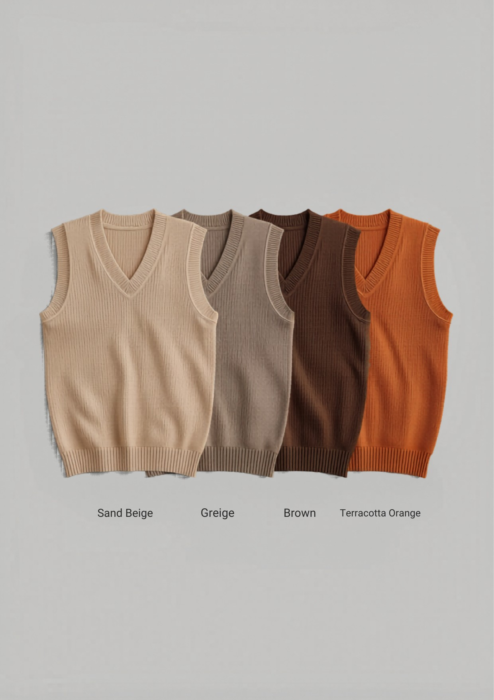
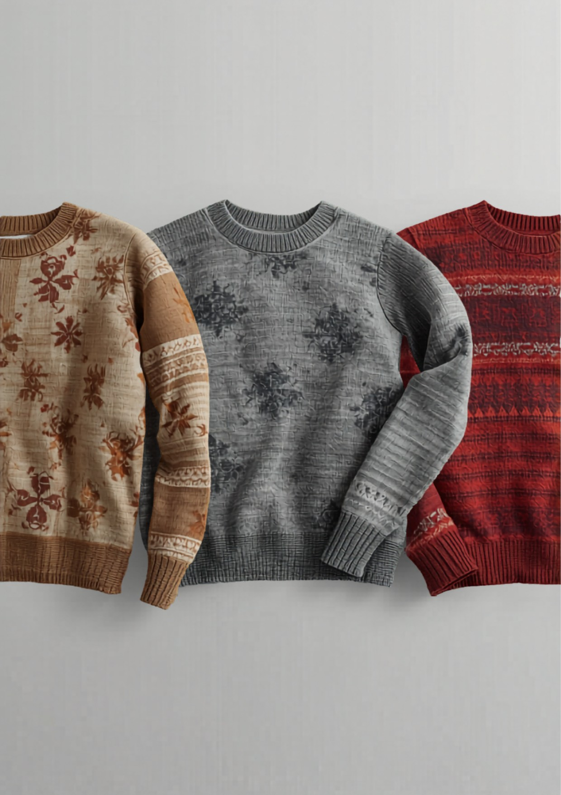
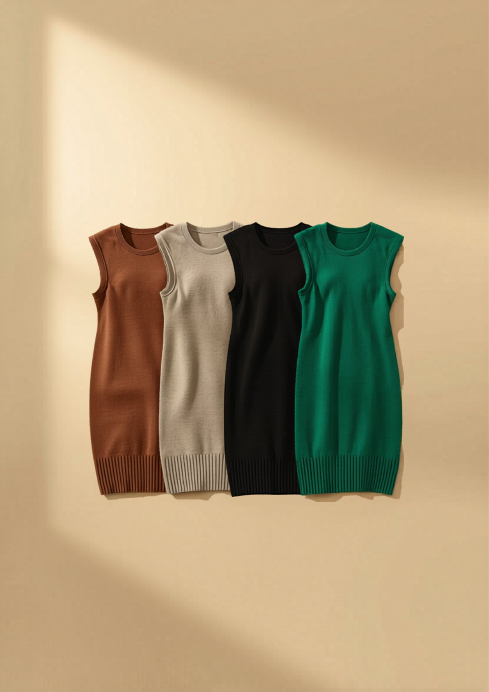
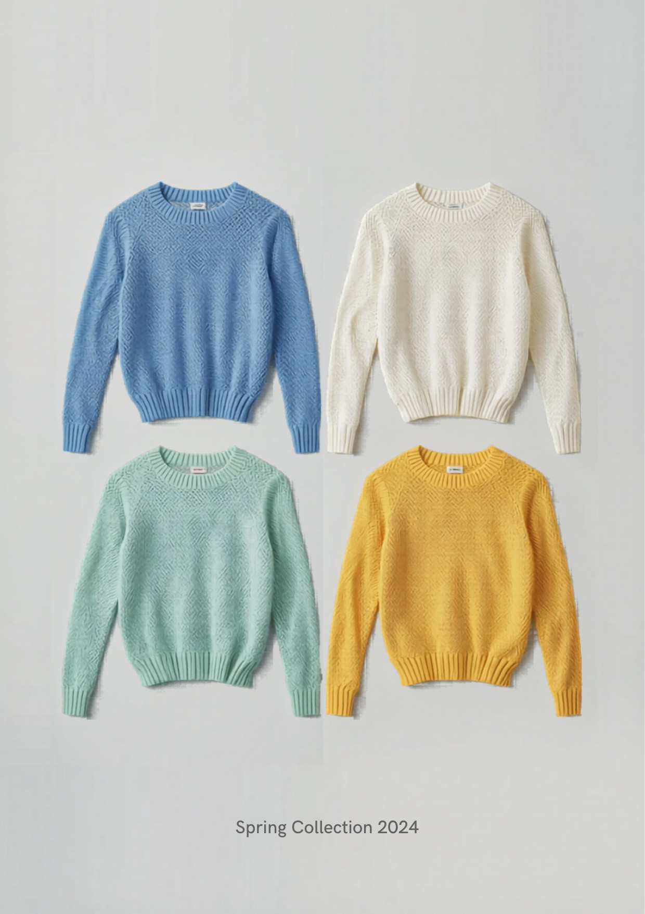
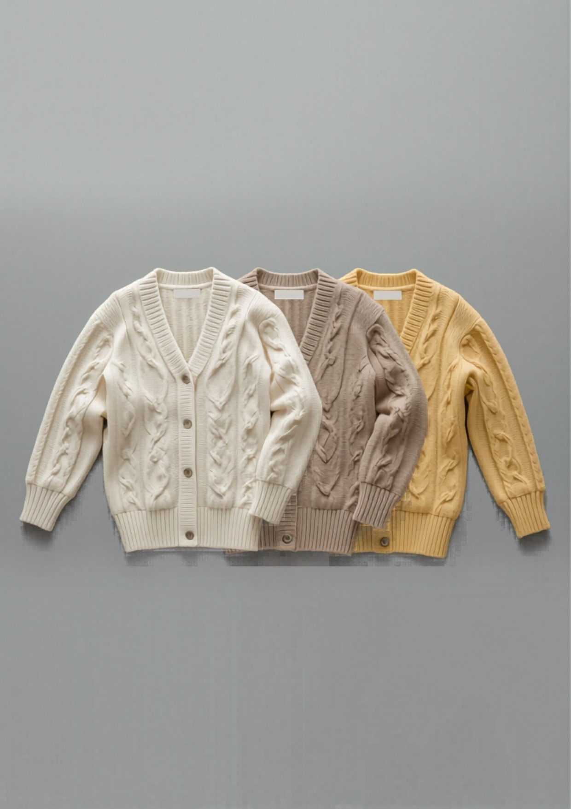
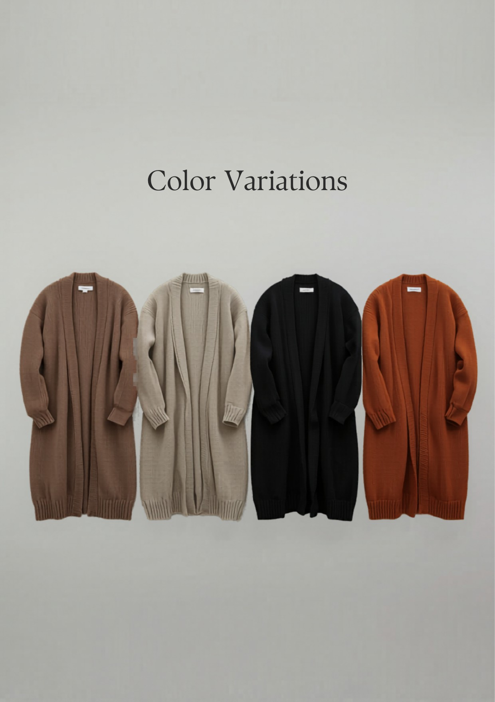
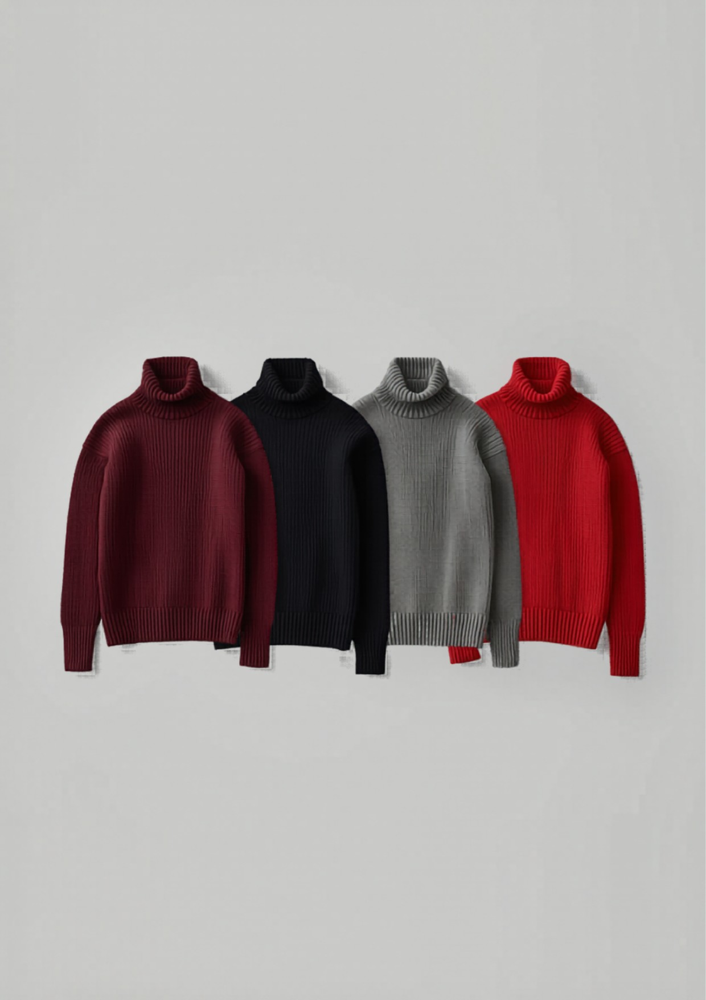

和
KNIT ・ COLORWAY COLLECTION ・ 2026–2027
ニット 展示会
カラーバリエーション
全10型 × 各カラー展開（明るい差し色入り）
ターゲット：30代から／レディース 上代：〜5,000円
東和盛泰株式会社 TOUWASEITAI CO., LTD. ニット衣料 OEM・ODM
TEL 084-999-2390 ／ info@touwaseitai.com
東和盛泰株式会社TOUWASEITAI CO., LTD.
COLOR STRATEGY
カラー戦略
10 STYLES × COLORWAYS
各型はベーシック3色＋明るい差し色1色を基本展開とします。定番色で数を確保しつつ、明るい1色で展示会の見栄え・SNS映え・回転を取る設計です（2026トレンドの差し色）。
| No. | アイテム | ベーシック | 明るい色（差し色） |
|---|
| 定番 | リブポロ | オフホワイト／モカ／ボルドー | イエロー 明 |
| A | シアーカーディガン | ホワイト／グレージュ／ミント | コーラルピンク 明 |
| B | 編地切替ベスト | サンドベージュ／グレージュ／ブラウン | テラコッタ 明 |
| C | ジャカード柄ニット | ベージュ×ブラウン／グレー系 | レッド系 明 |
| D | ニットワンピース | モカ／グレージュ／ブラック | エメラルドグリーン 明 |
| E | 水色シースルー | サックスブルー／ホワイト／ミント | レモンイエロー 明 |
| F | ケーブルカーディガン | オフホワイト／ベージュ／グレー | バターイエロー 明 |
| G | ロングニットガウン | モカ／グレージュ／ブラック | テラコッタ 明 |
| H | タートルネック | ボルドー／ブラック／グレー | エナジーレッド 明 |
| I | ケーブル柄プルオーバー | キャメル／グレー | レッド 明 |
※ 各型の実物カラーは次ページ以降の写真でご確認ください。色番・PANTONEは量産時に確定。
東和盛泰株式会社TOUWASEITAI CO., LTD.
COLORWAY ・ STANDARD
00
洗えるリブポロ
RIB POLO

素材/編み
アクリル混（抗ピリング）／2×2リブ・7GG
ｵﾌﾎﾜｲﾄﾓｶﾎﾞﾙﾄﾞｰｲｴﾛｰ明
定番枠：衿で顔まわりきれい・洗える実用品質。明るいイエローで展示の引きを作る。
¥2,990 上代
東和盛泰株式会社TOUWASEITAI CO., LTD.
COLORWAY ・ A
A
透かしシアーカーディガン
SHEER CARDIGAN

素材/編み
アクリル・ナイロン混／透かし編み・14〜16GG
ﾎﾜｲﾄｸﾞﾚｰｼﾞｭﾐﾝﾄｺｰﾗﾙﾋﾟﾝｸ明
◎技術：全面の透かし編み。明るいコーラルで春夏の華やぎ・SNS映え。
¥3,900〜4,900 上代
東和盛泰株式会社TOUWASEITAI CO., LTD.
COLORWAY ・ B
B
立体編地切替ベスト
TEXTURED VEST

素材/編み
アクリル・ウール混／ケーブル×リブ×メッシュ・7GG
ｻﾝﾄﾞﾍﾞｰｼﾞｭｸﾞﾚｰｼﾞｭﾌﾞﾗｳﾝﾃﾗｺｯﾀ明
◎技術：3編地切替の立体ベスト。明るいテラコッタで秋冬の差し色に。
¥3,500〜4,500 上代
東和盛泰株式会社TOUWASEITAI CO., LTD.
COLORWAY ・ C
C
ジャカード柄ニット
JACQUARD KNIT

素材/編み
アクリル混／ジャカード編み込み柄・12GG
ﾍﾞｰｼﾞｭ系ｸﾞﾚｰ系ﾚｯﾄﾞ系明
◎技術：編み込み柄の柄出し精度。明るいレッド系で柄物の華を強調。
¥3,900〜4,900 上代
東和盛泰株式会社TOUWASEITAI CO., LTD.
COLORWAY ・ D
D
ニットワンピース
KNIT DRESS

素材/編み
アクリル混（とろみ）／天竺・ウエスト切替・12GG
ﾓｶｸﾞﾚｰｼﾞｭﾌﾞﾗｯｸｴﾒﾗﾙﾄﾞ明
◎技術：長尺成型・体型カバー。明るいエメラルドで1枚で主役に。
¥4,900 上代
東和盛泰株式会社TOUWASEITAI CO., LTD.
COLORWAY ・ E
E
水色シースルー シアーニット
SAX SHEER KNIT

素材/編み
アクリル・ナイロン混／透かし編み・14〜16GG
ｻｯｸｽﾌﾞﾙｰﾎﾜｲﾄﾐﾝﾄﾚﾓﾝｲｴﾛｰ明
◎技術：淡色の透かし編みを均一に。水色＋明るいレモンで顔映え・抜け感。
¥3,900〜4,900 上代
東和盛泰株式会社TOUWASEITAI CO., LTD.
COLORWAY ・ F
F
ケーブルカーディガン
CABLE CARDIGAN

素材/編み
アクリル・ウール混／ケーブル編み・7GG
ｵﾌﾎﾜｲﾄﾍﾞｰｼﾞｭｸﾞﾚｰﾊﾞﾀｰｲｴﾛｰ明
◎技術：立体ケーブルの編立。明るいバターイエローで通年の主役カーデに。
¥3,900〜4,900 上代
東和盛泰株式会社TOUWASEITAI CO., LTD.
COLORWAY ・ G
G
ロングニットガウン
LONG KNIT GOWN

素材/編み
アクリル混（とろみ）／天竺〜ミラノリブ・12GG
ﾓｶｸﾞﾚｰｼﾞｭﾌﾞﾗｯｸﾃﾗｺｯﾀ明
◎技術：長尺の度目安定・ドレープ。明るいテラコッタで羽織りの主役に。
¥4,500〜4,900 上代
東和盛泰株式会社TOUWASEITAI CO., LTD.
COLORWAY ・ H
H
きれいめタートルネック
TURTLENECK

素材/編み
アクリル主体混／天竺〜ミラノリブ・12GG
ﾎﾞﾙﾄﾞｰﾌﾞﾗｯｸｸﾞﾚｰｴﾅｼﾞｰﾚｯﾄﾞ明
定番枠：30代鉄板のきれいめタートル。明るいレッドで差をつける。
¥2,990〜3,900 上代
東和盛泰株式会社TOUWASEITAI CO., LTD.
COLORWAY ・ I
I
ケーブル柄プルオーバー
CABLE PULLOVER

素材/編み
アクリル・ウール混／ケーブル（アラン）編み・クルーネック・7GG
ｷｬﾒﾙｸﾞﾚｰﾚｯﾄﾞ明
◎技術：立体的なアラン／ケーブル柄を左右対称・均一に編む編立技術。明るいレッドで1枚で主役、展示の引きに。
¥3,900〜4,900 上代